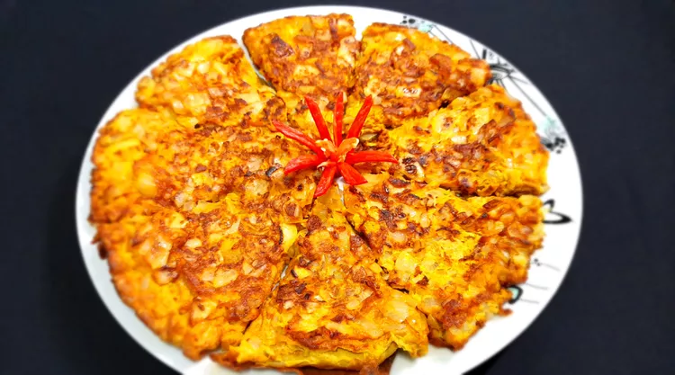

go back
Omelette

Indian omelette (or masala omelette) is a popular Indian dish available in
every Indian food stall around Malaysia. Very easy and fast to make, for
breakfast or as a side dish. This unfolded omelette with crispy, bronzed
edges and a soft middle is so delicious even on its own.
In this blog we will learn how to make an Indian Omellete!
Ingredients:
- 2 medium red onions
- 1 large yellow onion
- 8 large eggs
- 1 tablespoon chilli powder
- 1 tablespoon ground tumeric
- 1 teaspoon rock salt
- 1 pinch ground white pepper
- 5 tablespoon vegetable oil
Steps:
- Dice red and yellow onions into 3 different sizes.
-
Combine eggs, onions, chili powder, turmeric, rock salt, and pepper in a
large bowl; mix until well combined.
-
Heat oil in a large nonstick skillet over medium-high heat until
shimmering. Pour in egg mixture, making sure it's evenly distributed in
the skillet. Lower heat to medium, cover, and cook for 1 minute. Cut
omelette into 8 pieces and continue to cook until egg starts to brown
around the edges and appears to have set. Carefully flip with a spatula
and cook for 2 more minutes.
- Enjoy!